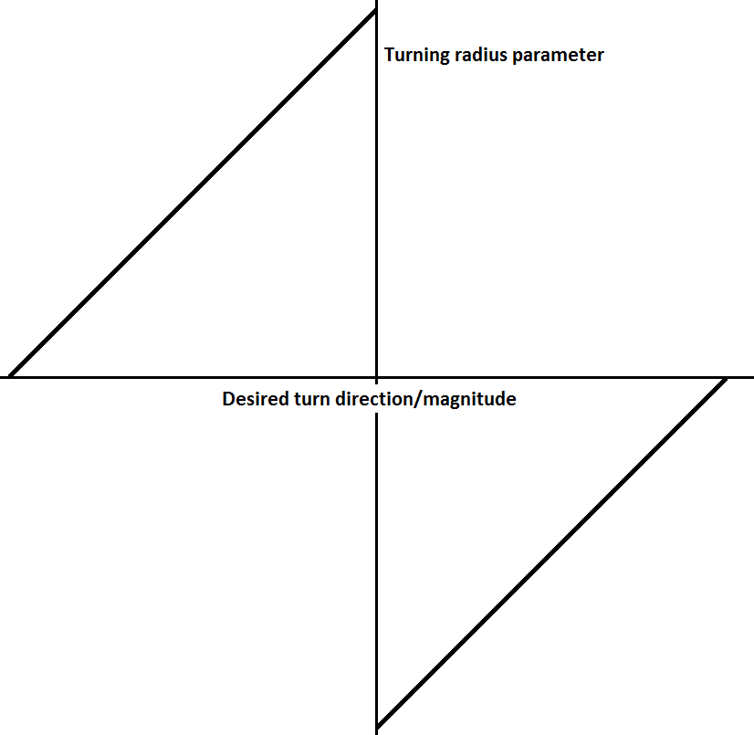
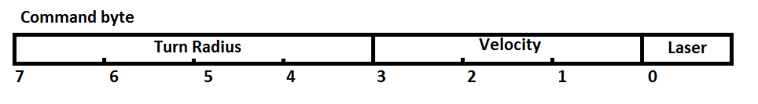
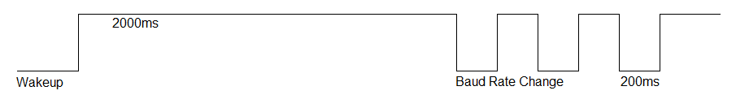
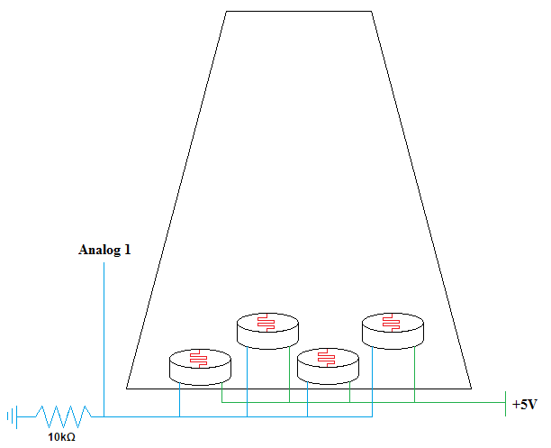

The command module consists of a joystick and bluetooth transmitter. These allow the user to remotely control the Roomba.
Analog to DigitalIn order to interpret the signal from the joystick we need to use the arduino's built in analog-to-digital converter. This takes the input from the joystick's x and y coordinates, a voltage between 0 and +5V, and converts it into a 16-bit integer between 0 and 1024. The converter uses 3 relevant registers: ADMUX, ADCSRA, and ADC. The ADMUX register stores information about what reference voltage is used and what channel to pick. In the 2 most significant bits we tell it to use Vcc, and we use the first 4 bits for selecting the channel.
// Select Vref=AVcc
ADMUX |= (1 << REFS0);
//select ADC channel with safety mask (do this before reading)
ADMUX = (ADMUX & 0xF0) | (ADCchannel & 0x0F);//set prescaller to 128 and enable ADC
ADCSRA |= (1 << ADPS2) | (1 << ADPS1) | (1 << ADPS0) | (1 << ADEN); ADCSRA |= (1 << ADSC);
// wait until ADC conversion is complete
while ( ADCSRA & (1 << ADSC) );
return ADC;
Multiple factors needed to be considered as to how the Roomba would be controlled. The difficulty in this process is attempting to balance ease of use with absolute control. For example the roomba could have a fixed speed and the x component of the joystick could determine the turning radius, this solution is extremely intuitive to use, but does not offer as much control as we desired (e.g. the user can not back up or accelerate). Another possible solution is to take advantage of the direct drive mode on the Roomba, and have the x-component control the left wheel and the y-component control the right wheel. This method offers exact control of both wheel velocities at once, so it is desireable in terms of control, however the interface is not easily learned as it requires mental separation of the axes.
We opted for a straight forward approach where the y-component controls the velocity and the x-component controls the turning radius. The only complication we encountered with this scheme was in implementation, the magnitude of the turning radius correlates inversely with how much the Roomba actually turns. For example a turning radius of ~2000 causes the roomba to drive straight ahead, and a turning radius of 1 causes it to rotate in place. Due to this we had to convert our desired turning radius to roughly match the graph to the left.
Once we have the results from the ADC, the joystick values are transmitted to the Roomba via bluetooth. Every time step they are sent as a one byte package with the 4 most significant bits as the left/right rotation, the next 3 as the forwards/backwards velocity, and the final bit to control the laser. We found that 16 options for the rotation and 8 options for the velocity were more than enough.

The actuator module rests on top of the Roomba and receives commands from the command module over bluetooth. It actuates the laser and the Roomba, and reads from the light sensor to determine when it gets hit. An important benefit of our design is that the actuator module does not know if it's commands are coming from a human controller or from the autonomous control system. In both cases the command module sends commands in the same format. This drastically reduces the complexity of the actuator module.
Communication with RoombaThe command module begins by initializing the Roomba. First the baud rate change pin is held low to wakeup the Roomba, then set high. After waiting two seconds, the pin is pulsed low three times for 200ms each. This tells the Roomba to communicate at a baud rate of 19200.
After the third pulse, the the UART from the acuator module to the Roomba is initialized at 19200 baud and the start command is sent. After waiting 20ms to ensure the Roomba has started and entered passive mode, the CONTROL command is sent, putting the roomba in safe mode. You can see the code for this initialization process below.
uint8_t i;
DDRB |= (1<< PB1);
Task_Sleep(201); // Note: Task_Sleep's parameter is in 10ms increments
for (i = 0; i < 3; i++)
{
PORTB &= ~(1<< PB1);
Task_Sleep(20);
PORTB |= (1<< PB1);
Task_Sleep(20);
}
uart_start1(19200);
uart_putchar(START);
Task_Sleep(2);
uart_putchar(CONTROL);
Task_Sleep(2);After intializing the Roomba, we load the defeat song onto the roomba. The SONG command takes the number of the song to load (in this case the first song), the number of notes in the song, and then a list of notes followed by their lengths, at one byte each.
Driving the RoombaThe DRIVE command on the Roomba takes two parameters, a velocity and a radius. These are sent as two 16-bit integers in big-endian over the UART to the roomba in the order: velocity high-byte, velocity low-byte, radius high-byte, radius low-byte. The velocity parameter specifies the speed the Roomba should travel in millimeters per second in the range [-500, 500]. This limits the Roomba to a maximum velocity of 0.5m/s. The radius parameter specifies the point around which the Roomba should rotate in millimeters from it's center in the range [-2000, 2000]. The positive values of radius produce counter-clockwise movement, and the negative values results in clockwise movement. A value of -1 or 1 results in spinning on the spot clockwise or counter-clockwise respectively. The large the magnitude of the radius, the straighter the Roomba moves.
Detecting WallsTo detect physical walls and virutal walls we use the bumper and the virtual wall detector respectively. We decided to use the bumper because it makes the robot more agressive rather than using the ranged physical wall detectors. We use the SENSORS command to read data from the Roomba. This command takes the number of sensors to query (in this case two), and the identifies of the requested sensors, in one byte each. After waiting 10ms for a response we read the states of the sensors back from the UART and detect a wall if either value is non-zero.
uint16_t retval;
uart_reset_receive1();
uart_putchar(149); //SENSORS
uart_putchar(2); // want 2 data
uart_putchar(13); // virtual wall
uart_putchar(7); // bumper
Task_Sleep(1);
if (uart_bytes_received1() < 2) {
uart_reset_receive1();
return 0;
} else {
retval = (uart_get_byte(0)<<8) | (uart_get_byte(1));
}
uart_reset_receive1();
return retval;We detect if we have been hit by a laser using a series of photoresistors within a plastic cup. The plastic cup diffuses the laser light enough that it is possible to detect the difference in light between when the cup is hit by a laser and the ambient light of the room. In order to have the photoresistors to be read by the AVR analog inputs, an additional 10kΩ resistor is required. By using four photoresistors evenly spaced within the cup, we have a larger chance of detecting the laser. We use an exponentially weighted moving average to smooth the value of the volatage read from the analogue pin. This helps the system detect actual hits, rather than spurious readings. When the smoothed voltage exceeds a threshold, the death song is played, the dead flag is set, and the DRIVE command is sent with zero velocity, halting the roomba in place.
|  |
|
The main loop first checks if the dead flag has been set. If it has, then we have been hit by a laser at some point in the past, and should do nothing; otherwise the loop continues normally. After a short delay, we read the latest command from the command module over bluetooth from the UART and extract the bits representing the velocity, radius, and if the laser should be fired. The laser pin is set if it should be fired, and the DRIVE command is sent to the Roomba with the values from the command. The sensors are checked to see if we hit a physical wall or a virtual wall and if they are we back up for half a second. Lastly, the photoresistors are checked to see if we were hit and the dead flag is set if we were.
PWM
For Phase 2, we implemented an autonomous AI with bounded pseudorandom movement. Every 2.4 seconds, the command module selected a random forward velocity and a radius from the set of transimittable values (as outlined in the control section in Phase 1). These are transmitted to the actiator module. The actuator module itself takes control when a wall is detected so the command module does not have to consider the presence of walls. The autonomous behaviour is enabled by a switch. When the switch is open, the command module sends command from the joystick to the Roomba; when the switch is closed, the autonomous behaviour is used.
This behaviour results is suprisingly consistent movement. The roomba proceeds in a direction while juking from side to side and ocassionally stopping to surprise opponents. When it encounters a wall, it reverses and rotates, before proceeding in the new direction as before. We experimented with more complex behavours, such as remembering walls and predicting our location, but found these were too error prone. Pseudorandom pathing yielded the best movement patterns.
The actuator module is unaware if the system is operating autonomously or at the direction of a human. That behaviour is restricted to the command module and allows the actuator module to remain simple.
The most difficult behaviour to debug was the robot's response to walls. The first behaviour we tried was to simply send a DRIVE command to the Roomba in the reverse direction when a wall was detected. At first this failed because a new command from the command module would immediatly override the reverse DRIVE command, causing a strange stuttering motion. After adding a delay to stop the overriding, this still didn't work because the roomba would just immediartly drive forward into the wall again.
We then tried rotating 90 degrees when we hit a wall. This failed because the bumper or virtual wall detector would still detect the presence of the wall, as the Roomba was still adjacent to it, resulting in the roomba spinning on the spot infinitley. We finally setteled on a combination of the two where the Roomba resverses and turns 90 degress. This allowed it to get away from the wall and resume normal travel.
The weakness of the virtual wall detector becomes aparent when the abouve behavoir is used. Because we can only detect if there is or is not a virtual wall, if the Roomba is reversed into the wall it will then reverse and turn through the wall and escape.
Download command module source code
Download actuator module source code